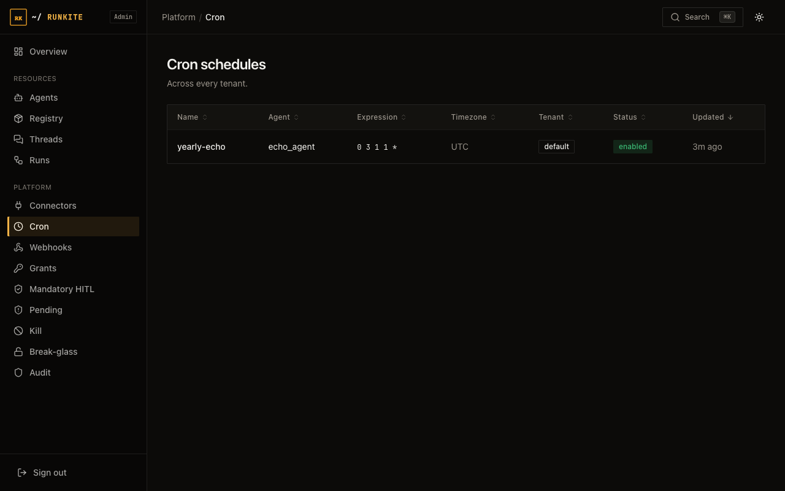

Operate
Cron
Fire agents on a schedule from the control plane — same enqueue path as a client-created run, with exactly-once claims across replicas.
What it is
Named schedules in langgraph.json (5-field cron + optional IANA timezone).
Each fire creates a run on a fixed thread cron:<schedule-name> so history stays browsable as one thread.
Why it is here
Scheduled work must not depend on a laptop cron or a sidecar that bypasses grants, kill, and audit. The plane owns the fire; runners only execute jobs.
How to implement
- Add a
cronblock to a discovered config (schedules bootstrap from every file, like graphs). - Point
agent_idat a registered agent; setexpressionand optionaltimezone/input. - Confirm the schedule in Admin → Cron (or
GET /internal/cron). - After a fire, open thread
cron:<name>and the run stream like any other run.
"cron": {
"daily-report": {
"agent_id": "my_agent",
"expression": "0 9 * * *",
"timezone": "America/New_York",
"input": { "messages": [{ "role": "human", "content": "generate the daily report" }] }
}
}
In the product
Admin → Cron — schedules across tenants

What to expect
- Multi-replica —
cron_claimsensures one dispatch per fire when replicas share Postgres. - Missed fires — restarting schedules catch the latest miss only (no backlog storm); brand-new schedules start from registration time.
- Overlap — if the previous fire’s run is still in flight, the next fire is skipped like any busy thread.
Reference: docs/configuration.md · Runs & threads